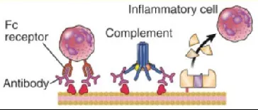
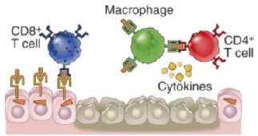
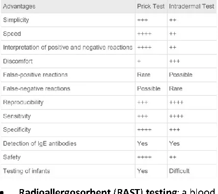

Week 15: Allergy, autoimmunity and vaccines
When the immune system overreacts to harmless things (allergy) or attacks the self (autoimmunity), how allergists test for it, and how vaccines are made, monitored and discussed with hesitant families.
Lectures this week
- Approach to allergy (Kuprowski)
- Understanding allergy testing (Kuprowski)
- Approach to allergy through different lenses (Kuprowski)
- Mechanisms of autoimmunity and clinical autoimmunity (Barra)
- Approach to autoimmune disease (Kuprowski)
- Vaccine hesitancy case application (Barton)
- Vaccine side effects and AEFI (Mohammadi)
Hypersensitivity and anaphylaxis
Allergy is an overreaction to harmless antigens. Four mechanisms explain almost every reaction, and anaphylaxis is the one you must never miss.
Where allergy fits
The immune system removes pathogens and damaged cells. Each kind of failure has its own disease:
Too weak against microbes
Immunodeficiency
Fails to remove self-reactive cells
Autoimmunity
Fails to remove abnormal cells
Cancer
Overreacts to benign antigens
Allergy (hypersensitivity)
Hypersensitivity is an inappropriate overreaction to benign antigens, usually proteins. Allergic disease affects about 30% of people, costs them double in medications and accounts for 3% of family doctor visits.
Sources: Approach to Allergy (Kuprowski), Nicole's Notes pp. 144 to 145
The four Gell and Coombs types
Type I: IgE
- Immediate
- Th2 cells, IgE, mast cells, eosinophils
- Mast cell mediators (histamine) cause the symptoms
- Allergic rhinitis, immediate food, drug and venom allergy, cat-triggered asthma, anaphylaxis
Type II: antibody
- IgG or IgM against cell surfaces
- Complement, phagocytosis, or blocked receptor signalling
- Drug-induced cytopenia, hemolytic anemia
Type III: immune complex
- Antigen-antibody complexes deposit in vessel walls
- Complement recruits leukocytes
- Serum sickness-like reaction (rash, fever, joint pain). Common in autoimmunity
Type IV: T cell
- Delayed
- CD4 T cells activate macrophages. CD8 T cells kill target cells
- SJS, TEN, morbilliform rash, contact dermatitis
Sources: Approach to Allergy (Kuprowski), Nicole's Notes pp. 144 to 145
Anaphylaxis: recognize it
Anaphylaxis is a serious allergic reaction from systemic release of mast cell and basophil mediators. It starts fast, usually within minutes and almost always within 1 hour, and it can kill. If symptoms start more than 1 hour after exposure, it probably was not anaphylaxis, or you have the wrong trigger. Lifetime prevalence 0.5 to 2%.
The general rule: symptoms in 2 or more organ systems. Anaphylaxis is likely when any one of three criteria is met:
1. Skin or mucosa plus one more
- Sudden hives, flushing or lip and tongue swelling
- AND breathing trouble (wheeze, stridor, hypoxemia)
- OR low BP or end-organ signs (collapse, incontinence)
2. Likely allergen plus two of
- Skin or mucosa
- Breathing
- Low BP
- Persistent GI symptoms (cramps, vomiting)
3. Known allergen plus low BP
- Adults: systolic under 90 or a drop over 30% from baseline
- Children: low for age or a drop over 30%
Sources: Approach to Allergy (Kuprowski), Nicole's Notes pp. 144 to 145
Anaphylaxis: treat it
Stop the trigger
Call for help, ABCs
IM epinephrine
1:1000 (1 mg/mL), 0.01 mg/kg, mid-anterolateral thigh
Repeat
Every 5 to 15 min as needed
Then the rest
Oxygen, fluids, antihistamine, salbutamol, steroids
| Patient | Dose |
|---|---|
| Over 30 kg | 0.3 mg (0.3 mL of 1:1000). Allergy lecture max 0.5 mg |
| Under 30 kg | 0.01 mL/kg of 1:1000, max 0.3 mg |
| EpiPen Jr / EpiPen | 0.15 mg (up to 30 kg, switch at 25 kg) / 0.3 mg |
Exam trap
- Use 1:1000 for anaphylaxis. 1:10,000 is the cardiac arrest concentration.
- Antihistamines and steroids do not replace epinephrine. Only 14% of people who died of anaphylaxis got epinephrine before arrest.
- Time to arrest: iatrogenic 5 min, sting 15 min, food 30 min.
EpiPen use: fist around it, orange tip down, remove the cap, push into the mid-outer thigh until it clicks, hold 5 seconds, then call 911.
Sources: Approach to Allergy (Kuprowski), Nicole's Notes pp. 144 to 145
Why is allergy rising? The hygiene hypothesis
Allergy has climbed through the 20th and 21st centuries. The Hygiene Hypothesis (1989) proposes that fewer early childhood infections leave the developing immune system tilted toward an allergy-promoting state.
Th1
- allergy protecting
- Defence against cellular organisms
- Pushed by early infection ("dirty" environment)
Th2
- allergy promoting
- Drives B cells to make antibody (IgE)
- Favoured in a clean environment
Sources: Approach to Allergy (Kuprowski), Nicole's Notes pp. 144 to 145
Nicole's Notes, original wording 3 sections
Hypersensitivity Reactionsp. 144
- Hypersensitivity: an inappropriate, overreaction to benign antigens (usually proteins)
- Gell and Coombs hypersensitivity classification – can be used to explain the pathophysiology for most allergic reactions from immediate to delayed reactions
| Type of Allergic Reaction | Effector Mechanism | Examples |
|---|---|---|
| Type I: IgE mediated hypersensitivity (allergy and asthma) | Th2 cells, IgE antibody, mast cells, eosinophils Mast cell-derived mediators (vasoactive amines, lipid mediators, cytokines) Cytokine-mediated inflammation (eosinophils, neutrophils) | Allergic rhinitis, immediate food allergy, immediate drug allergy, venom allergy, asthma triggered by cat exposure |
| Type II: Antibody-mediated cell death | IgM, IgG antibodies against cell surface or extracellular matrix agents Complement and Fc receptor-mediated recruitment and activation of leukocytes (neutrophils, macrophages) Opsonization and phagocytosis of cells Abnormalities in cellular function – hormone or neurotransmitter receptor signalling | Drug-induced cytopenia |


| Type III: Immune complex disease | Immune complexes of circulating antigens and IgM or IgG antibodies deposited in vascular basement membrane Complement and Fc receptor-mediated recruitment and activation of leukocytes | Serum sickness like reaction Common in autoimmunity |
| Type IV: Delayed hypersensitivity (cell-mediated) | CD4+ T cells (cytokine-mediated inflammation) – macrophage activation CD8+ CTLs (T cell-mediated cytolysis) – direct target cell lysis | Stevens-Johnson syndrome (SJS), toxic epidermal necrolysis (TEN) Life-threatening allergic drug reactions |


Anaphylaxisp. 145
- Anaphylaxis: a serious allergic reaction with a rapid onset (minutes to within 1 hour), which may cause death
- 0.5-5% lifetime prevalence; 1% of ER visits for acute systemic allergic reactions receive the diagnosis of anaphylaxis
- Caused by the systemic release of mast cell and basophil mediators
- Anaphylaxis is highly likely when any one of the following three criteria is fulfilled: 1. Sudden onset of an illness (minutes to several hours), with involvement of the skin, mucosal tissue, or both (generalized hives, itch/flush, swollen lips-tongue-uvula), and at least one of the following: a. Sudden respiratory symptoms and signs (shortness of breath, wheeze, cough, stridor, hypoxemia) b. Sudden reduced BP or symptoms of end-organ dysfunction (hypotonia/collapse, incontinence) 2. Two or more of the following that occur suddenly after exposure to a likely allergen or other trigger for that patient: a. Sudden skin or mucosal symptoms and signs (generalized hives, itch/flush, swollen lips-tongue-uvula) b. Sudden respiratory symptoms and signs (shortness of breath, wheeze, cough, stridor, hypoxemia) c. Sudden reduced BP or symptoms of end-organ dysfunction (hypotonia/collapse, incontinence) d. Sudden gastrointestinal symptoms (crampy abdominal pain, vomiting) 3. Reduced BP after exposure to a known allergen for that patient: a. Infants and children: low systolic BP (age-specific) or greater than 30% decrease in systolic BP b. Adults: systolic BP of less than 90 mm Hg or greater than 30% decrease from that person’s baseline
- Treatment: remove the trigger, prompt administration of IM epinephrine (0.01 mg/kg of 1:1000 solution, max dose = 0.3 mg), repeat epinephrine every 5-15 mins PRN, other drugs after epinephrine (O, fluids, antihistamine, salbutamol, corticosteroids)
- Mean time to cardiorespiratory arrest: iatrogenic = 5 mins, insect sting = 15 mins, food = 30 mins
Hygiene Hypothesis (1989)p. 145
- Throughout the 20 th and into the 21 st century, the incidence of allergy has rapidly grown
- Suggests that the lower incidence of early childhood infections could explain the rise in allergy Immune system is being established in infancy and childhood
- Th1 inflammatory state is allergy protecting – defense against cellular organisms
- o Th2 inflammatory state is allergy promoting – induction of antibody production by B cells
- Living in a clean environment promotes the development of allergy; living in a dirty environment results in allergy protection
Quick recall
Answer in your head, then check.
Type III, immune complex.
Type IV, T cell mediated (delayed).
Within minutes, almost always within 1 hour.
IM epinephrine 1:1000, 0.01 mg/kg in the thigh, repeat every 5 to 15 minutes.
1:1000 (1 mg/mL). 1:10,000 is for cardiac arrest.
Th2.
Common allergies
Four allergies you will see all the time: allergic rhinitis, food, drug and venom. Each has its own history, tests and plan.
Allergic rhinitis
Up to 30% of people have it, usually starting before age 30. 60% also have conjunctivitis, 40% have asthma, and 80% of people with chronic sinusitis have allergic rhinitis. It hurts sleep, learning, exam scores and work.
History: nasal congestion, sneezing, runny and itchy nose and palate, red, watery, itchy eyes. Ask if it is constant or intermittent, indoors or outdoors, what season, what triggers it, and whether treatment helps.
| Rhinitis | Key feature |
|---|---|
| Allergic rhinitis | Itching is pathognomonic, conjunctivitis common |
| Non-allergic (vasomotor) | Congestion and rhinorrhea, irritant triggers (temperature, odours) |
| Nasal polyps | Loss of smell (anosmia) |
| Infectious rhinitis | Fever and sore throat, itch rare |
Persistent allergens
- Dust mites
- Pets (cat, dog, rabbit)
- Mould (can be persistent)
Seasonal allergens
- Trees: April to May
- Grass: May to June
- Ragweed: August to September
- Mould: spring to fall
Avoid
Hot-wash sheets weekly, mattress covers, AC with windows closed, wash pets
Antihistamine
2nd-generation non-sedating. Avoid 1st-gen like diphenhydramine (Benadryl)
Nasal steroid
Foundational, works best daily. Can cause nosebleeds
Immunotherapy
Subcutaneous or sublingual, for pollens, mould, pets, dust mite
Exam trap
Avoid decongestant nose sprays. Daily use causes rebound congestion (rhinitis medicamentosa). Daily Benadryl can cause brain fog and fatigue.
Sources: Approach to Allergy and Approach to Allergy through Different Lenses (Kuprowski), Nicole's Notes pp. 146, 148
Food allergy
Allergy
An immune mechanism explains the symptoms.
Intolerance
A known non-immune mechanism explains them (lactose intolerance).
Aversion
No mechanism, and symptoms do not reproduce when the food is given blinded.
Immediate (IgE, minutes to 1 hour): peanut allergy, oral allergy (food pollen) syndrome. Delayed (hours, vomiting or diarrhea): FPIES, allergic proctocolitis. Food allergy affects 5% of children and 3 to 4% of adults, but 3 to 35% report one, and over 20% change their diet because of it.
Skin barrier defect
Atopic dermatitis lets food protein in through the skin
Sensitization
Immune system learns to make IgE to the food
Allergy
Must know
Introduce allergenic foods early (4 to 6 months) and do not rub food on the skin. The LEAP trial showed early peanut protects high-risk infants (severe eczema or egg allergy). Maternal diet restriction in pregnancy or breastfeeding has no evidence.
Diagnosis starts with the history: which food, a top allergen, reaction on repeat exposure, onset within minutes, and symptoms (skin most common, then breathing, cardiac, GI). Skin or IgE tests confirm or refute. The oral food challenge is the gold standard, used when history and tests disagree.
Treatment: avoid the food ("may contain" labels are not standardized), carry epinephrine (the only proven acute treatment), consider oral immunotherapy (not a cure), and baked milk or egg which is less allergenic.
Likely to outgrow
Milk and egg
Unlikely to outgrow
Everything else (peanut, tree nut, fish, shellfish)
Clinical pearl
Jax, 5 months, gets hives around the mouth and torso minutes after his first scrambled egg. Pharmacist: non-sedating antihistamine and see the family doctor. Family doctor: presumptive egg allergy, epinephrine, avoid egg, keep eating tolerated foods, refer. Allergist: positive skin test, baked egg challenge, egg ladder. Two years later he eats egg in every form.
Sources: Approach to Allergy and Approach to Allergy through Different Lenses (Kuprowski), Nicole's Notes pp. 146, 148
Drug allergy
An adverse drug reaction is anything a drug causes. Drug allergy is one kind.
Type A: predictable
- Overdose or toxicity (acetaminophen liver failure)
- Side effects (nausea with erythromycin)
- Secondary effects (antibiotic diarrhea)
- Drug interactions
Type B: unpredictable
- Intolerance (tinnitus after one ASA)
- Idiosyncrasy (G6PD hemolysis)
- immunologic drug reactions (allergy): anaphylaxis to penicillin
- pseudoallergenic: morphine hives with no immune mechanism
Risk factors: young or middle age, female, genetics, viral infection (HIV, herpes), prior reaction, high molecular weight drugs, topical over IV over oral, and frequent or prolonged dosing.
When did it start?
Immediate or delayed
Immediate + type I signs
Hives, breathing, cardiac, GI: avoid. Intolerance: may take again
Delayed + mild
Red rash for a few days: may take again
Delayed + severe
Anything more, like blistering: avoid
Immediate allergy wanes: 80% are no longer allergic after 10 years of avoidance. Delayed reactions last for life, and a severe delayed reaction is a hard contraindication forever. Penicillin details (skin testing, challenge, de-labelling) are in Week 13 under Antibiotics.
Sources: Approach to Allergy and Approach to Allergy through Different Lenses (Kuprowski), Nicole's Notes pp. 146, 148
Venom allergy
Venom is a mix of proteins, vasoactive amines and enzymes. Yellow jackets are the most likely culprit. Many people lose sensitivity: after 7 years, 70% no longer react.
Sting reactions, mildest to most severe
Normal local
Pain, itch, redness, swelling. Hours
Large local
Over 10 cm, contiguous, 1 to 2 days
Systemic cutaneous
Hives, flushing away from the sting
Systemic extracutaneous
Bronchospasm, airway edema, low BP
Systemic cutaneous reactions are most common in children, hypotensive shock in adults. Extracutaneous symptoms without hives suggest a mast cell disorder. Risk of worse reactions: beta blockers, ACE inhibitors, older age, frequent stings, mast cell disorders.
Who gets venom immunotherapy
Moderate to severe systemic (extracutaneous) reactions. It lowers the risk of a systemic reaction on the next sting to under 5%.
Who carries epinephrine
Must: anyone at risk of a severe systemic reaction. Reasonable: anyone with a sting reaction who wants one.
Effective avoidance: do not eat or drink from cans outdoors, avoid flowering plants, cover trash, remove fallen fruit, watch for nests, wear shoes. Avoiding perfume, bright clothing and repellents does not work.
Sources: Approach to Allergy and Approach to Allergy through Different Lenses (Kuprowski), Nicole's Notes pp. 146, 148
Nicole's Notes, original wording 2 sections
Common Allergiesp. 146
| Allergic Rhinitis | Food Allergy | Drug Allergy | Venom Allergy | |
|---|---|---|---|---|
| Epidemiology | All ages, onset usually before 30 years Common; affects 30% of the population | All ages, presents most often in childhood 3-35% self-reported food allergy – adjust diet | 14-20% report hypersensitivity reactions -72% penicillin (33% immediate, 39% delayed) -90% are found not to be allergic | |
| Risk factors | Atopic dermatitis | Patient-related: young/middle aged, female, genetic polymorphisms, viral infection (HIV), previous reaction to the drug Drug-related: high molecular weight and hapten forming drug, topical > IV/IM > oral, frequent/prolonged dosing | Patients on beta blockers and ACE inhibitors, older adults, frequent stings, mast cell disorder | |
| Hx | Congestion, sneezing, rhinorrhea, pruritis, erythema of conjunctiva, watery eyes Chronic/intermittent, indoors/outdoors, time of year, triggers, response to allergy treatment, FHx, associated symptoms | Identify the potential offending food Timing of symptom onset Cutaneous (hives, itching, eczema), coughing, wheezing, dyspnea, chest tightness, loss of consciousness, low BP, vomiting, abdominal pain | All medications taken at the time of the reaction – start date, route, timing of symptom onset, symptoms, previous exposure to the suspected drug | Insect, what the patient was doing at the time, timing of symptom onset, when was the patient stung (recent, years ago), sequence of events after the sting (type of reaction, treatment) |
| DDx | Allergic rhinitis: pathognomonic itching, conjunctivitis Non-allergic / vasomotor rhinitis: congestion, rhinorrhea Nasal polyps: anosmia Infectious rhinitis: fever, sore throat | Allergy: immunological argument to explain the symptoms from a food Intolerance: known mechanism that can explain symptoms from a particular food Aversion: no mechanism to explain symptoms; not reproducible when blinded | Type A: predictable adverse drug reactions: -Overdose/toxicity, side effects, secondary/ indirect effects, drug interactions Type B: unpredictable adverse drug reactions -Intolerance, idiosyncrasy, immunologic drug reactions (allergy), pseudoallergenic | Normal local reaction: pain, itching, erythema, edema; lasts a few hours Large local reaction: swelling > 10 cm; 1-2 days Systemic cutaneous (children): flushing, itching, urticaria; not contiguous Systemic extracutaneous: involves multiple organ systems (bronchospasm, upper airway edema, hypotension, GI, cardia arrythmia) |
| Allergens/ Types | Intermittent (< 6 weeks): pollen, mold Persistent (chronic): dust mites, pets Mild: normal sleep, no functional impairment Severe: abnormal sleep, functional impairment | Peanuts, tree nuts, milk, eggs, wheat, soy, fish Immediate (within 1 hour) Non-immediate (hours): vomiting, diarrhea; food protein-induced allergic proctocolitis (FPIAP) | Immediate vs. delayed Mild vs. severe Gell and Coombs classification | Insect venom is a complex mixture of proteins, vasoactive amines, and enzymes Apidae: honeybee (barbed), bumblebee Vespidae: yellowjacket, hornets Polistinae: paper wasp Formicidae: fire ant, jumper ant, harvester ant |
| Ix | Skin prick testing Serum specific IgE testing (RAST) | Skin prick testing Serum specific IgE testing (RAST) Oral challenge to the suspected food | Skin prick testing (most reliable, > 95% NPV) Oral challenge to the drug | Skin prick testing |
| Tx | Allergen avoidance 2 nd generation antihistamines daily or PRN: Claritin, Reactine (cetirizine), Aerius Avoid 1 st generation antihistamines: Benadryl Nasal steroids daily: mometasone Eye drops: patanol Immunotherapy: subcutaneous, sublingual Avoid decongestant nose sprays – dependence | Allergen avoidance: may contain claims are issues Epinephrine (standard of care): -EpiPen – blue to the sky, orange to the thigh Oral immunotherapy: -Small incremental doses over time, so the patient will not react to an accidental exposure -Extensively baking milk and egg | Avoid if Type I and Type IV reactions | For extracutaneous systemic reactions ONLY: EpiPen (can Rx if a patient wants one) Venom immunotherapy (allergy shots): -Effective to reduce death from a sting -Decrease risk of a systemic reaction to < 5% |
| Prognosis | Children will likely outgrow milk and egg allergies, but are unlikely to outgrow anything else | Immediate reactions can wane over time (80% of patients will not be allergic after 10 years of avoidance) Delayed reactions persist throughout life | Many patients will lose their sensitivity over time (after 7 years, 70% of patients who were initially positive did not react to a sting) | |
| Prevention | Dust mites: wash sheets weekly in hot water Pollens/mold: use A/C, keep windows closed Pets: removal from home, bath regularly | Dual antigen hypothesis -High-dose oral exposure: introduce allergenic foods early (4-6 months) – LEAP study, EAT study -Low-dose cutaneous exposure: do not rub food over the skin – coconut oil on atopic dermatitis | Avoid cross-reactive drugs Use predicative skin tests if available for immediate drug allergy Prudent use of drugs Preferential use of oral drugs | Sting avoidance: eating outdoors, flowering plants, drinking from straws/cans/bottles, remove fallen fruit or pet feces, cover trash cans, watch for nests in bushes/ground when mowing, going barefoot outdoors |
Approach to Allergy from Different Healthcare Providersp. 148
| Health Care Provider | Role |
|---|---|
| Pharmacist | Often the first point of contact for patients with possible mild allergic reactions – severe reactions present to the ER Advise the patient about selecting an antihistamine Recommend follow-up, allergen avoidance, and seeing the family physician Do NOT provide a diagnosis – treatments and advice |
| Family physician | Provide a presumptive diagnosis, recommendations, and a treatment plan Consider many different factors to help make the diagnosis Make a referral to an allergist |
| Allergist | Consider the same factors as the family doctor to help make a diagnosis Confirm the allergy and counsel/educate the patient about it Develop a treatment and management plan |
Quick recall
Answer in your head, then check.
Itching.
Rebound congestion (rhinitis medicamentosa).
Intolerance, a known non-immune mechanism.
Milk and egg.
The oral food challenge.
Pseudoallergic, a type B adverse drug reaction.
Large local reaction.
Patients with moderate to severe systemic (extracutaneous) reactions.
Allergy testing
Allergy tests diagnose type I (IgE) allergy, but a result only means something next to the history. The best allergy test is the clinical history.
The history comes first
Testing confirms or rules out a diagnosis the history already suggests. Two 9-month-olds eat yogurt. One gets full-body hives within minutes, vomits, coughs, wheezes and needs epinephrine. The other gets a red rash around the mouth that fades in hours. The first story is far more convincing for milk allergy.
Sensitivity and specificity vary by what you test and how, so "skin tests are sensitive but not specific" is misleading. Use Pre-test probability and Likelihood ratio (LR) instead.
Positive LR
Sn / (1 − Sp)
Negative LR
(1 − Sn) / Sp
Sources: Understanding Allergy Testing (Kuprowski), Nicole's Notes p. 147
The tests
| Skin prick test | Intradermal test | Serum specific IgE (RAST) | |
|---|---|---|---|
| Used for | Foods, environmental allergens, immediate penicillin allergy | Drugs, venom (after anaphylaxis) | When skin testing is not possible, or to confirm |
| How | Allergen pricked into skin. Positive = wheal 3 mm or more above the negative control | Allergen injected into the dermis | Patient serum on bound allergen, measure the IgE that sticks |
| Sensitivity | 57 to 97% | 60 to 95% | |
| Specificity | 70 to 94% | 32 to 89% |
Extracts come from purified food protein (all allergens, variable amounts per batch) or recombinant proteins (major known allergens only, so false negatives). Environmental extracts: dust mite feces, cat and dog dander, pollen, mould spores. Venom testing covers yellow jacket, yellow hornet, white-faced hornet, wasp and honeybee. Penicillin is the only standardized drug skin test, and drug skin testing is only for immediate reactions.
False negatives
- Too little antigen (processing, storage, the food itself)
- Extract lacks the relevant protein
- Age under 2 (smaller wheals, lower IgE)
False positives
- Spiked extract with too much antigen
- Cross-reactivity: about 70% protein homology. Birch pollen allergy can cause an itchy mouth with almond
Component testing measures IgE to single proteins. Ara h2 is twice as predictive as whole-peanut IgE (PPV 75% versus 32.5%).
Sources: Understanding Allergy Testing (Kuprowski), Nicole's Notes p. 147
Challenges: the gold standard
A challenge gives increasing doses of the food or drug at set intervals and watches for a reaction.
Food
- About 5 to 7 steps, 15 to 30 min apart
- Aim for an age-appropriate serving: 8 to 10 g dry food or 100 mL wet food
Drug
- Single step: full dose
- Two step: 10%, wait, then 90%
| Challenge | Notes |
|---|---|
| Open | Simple, but false positives with subjective symptoms (itch, upset stomach) |
| Single-blind | Patient blinded. Limited value |
| Double-blind, placebo-controlled | Gold standard for subjective symptoms. Expensive and slow |
High-risk patients: start very low, optimize asthma or heart disease first, avoid in pregnancy, watch for β-blockers, do it in hospital with an IV.
Sources: Understanding Allergy Testing (Kuprowski), Nicole's Notes p. 147
Nicole's Notes, original wording 1 section
Allergy Testingp. 147
- Allergy testing plays a role in the diagnosis of Type I hypersensitivity reactions
- The best allergy testing tool is the clinical Hx
- Allergy testing sensitivity and specificity are different depending on what is being tested for and the type of testing done
- Interpreting a test depends on the pre-/post-test probabilities and likelihood ratios, in the context of the clinical Hx
- Pre-test probability: the clinical impression on the chance that the patient has a certain diagnosis
- o Clinical experience, epidemiology, co-morbid conditions, risk factors, PEx findings
- Likelihood ratio (LR): the likelihood that a given test result would be expected in a patient with the target disorder compared to the likelihood that that same result would be expected in a patient without the target disorder
- o Positive LR: the odds that a person who has what you are looking for has a positive test compared to a person who does not have what you are looking for but has a positive test; Sn/(1-Sp)
- o Negative LR: the odds that a person who has what you are looking for has a negative test compared to a person who does not have what you are looking for but has a negative test; (1-Sn)/Sp
- o Calculate from sensitivity and specificity or use a nomogram
- Cross reactivity: can occur when there is ~70% homology between antigens such that the tertiary structure is conserved
- o Patients with food pollen syndrome to birch can get oral pruritis to almond
- Food allergen proteins used for skin prick testing and serum IgE testing are commercially prepared Purified food protein – should contain all relevant allergens; amount of each allergen is variable with each batch
- o Recombinant extract – known allergens are made using bacteria vectors; often contains the major known allergens, but will not contain allergens that are not well known (false negative results); can be used to spike purified food protein extracts for clinically important allergens that are at low concentration
- Environmental allergen proteins: dust mites (feces), cat/dog (dander), seasonal allergens (pollen), mold (spores)
| Skin Prick Test | Intradermal Test | |
|---|---|---|
| Use | Foods, environmental allergens, immediate drug allergy (penicillin) | Drugs, venom (patients who have had anaphylaxis) |
| Sensitivity | 57-97% | 60-95% |
| Specificity | 70-94% | 32-89% |
| Method | Several allergens are introduced to the skin Positive control: histamine Negative control: saline solution | Inject antigen just below the epidermis and produce a bleb |
| Positive test | Wheal ≥ 3 mm of the negative control | Wheal ≥ 3 mm of the negative control |
| Common errors | Tests are placed too close together (< 2 cm) – overlapping reactions Induction of bleeding – false positive results Insufficient penetration of skin – false negative results Allergen solutions can spread during the test or when the solution is wiped away Food testing is more likely to have false negative results with commercial extracts opposed to fresh foods | Test sites are too close together – false positive results Volume injected is too large (> 0.1 mL) High concentration of allergen – false positive results Splash reaction is caused by air injection Subcutaneous injection – false negative results Intracutaneous bleeding site – false positive results Too many tests performed at the same time – systemic reactions |


- Radioallergosorbent (RAST) testing: a blood test using radioimmunoassay test to detect specific IgE antibodies in order to determine the substances a subject is allergic to 1. Extract proteins from the allergen 2. Affix the protein extract to a solid phase surface and send to the lab 3. Isolate the patient’s serum and add it to the protein; wash away the serum, leaving behind the bound IgE 4. Add a marker to measure the IgE bound; measure how much IgE is bound
- Component based IgE testing: pinpoints specific proteins that may be causing allergic symptoms
- o Newer test to better predict reactions to foods and potential cross-reactivity to foods, and to identify major allergens for food and aeroallergens
- Oral challenges (gold standard)
- o Foods: 5-7 step approach, increase dose every 15-30 mins, with the goal of consuming a total age-appropriate serving § Dry foods = 8-10 g, wet foods = 100 mL
- o Drugs: single step (give full dose and observe); two step/graded (give 10% dose, wait, give remaining 90% dose) High risk patients: start with very low doses where the patient is unlikely to react, optimize comorbid conditions, avoid
- in pregnant patients, beta blockers can interfere with allergic reaction treatments, do the challenge in hospital and consider an IV prior to the challenge
Quick recall
Answer in your head, then check.
The clinical history.
A wheal 3 mm or more larger than the negative control.
Intradermal testing.
No. Post-test probability stays around 75%. Test further.
Cross-reactivity from about 70% protein homology.
Double-blind, placebo-controlled food challenge.
Autoimmunity
The immune system normally deletes or silences cells that react to self. Autoimmunity is what happens when that tolerance breaks.
Tolerance: how the body avoids attacking itself
Immune tolerance is antigen-specific unresponsiveness to self antigens. It happens in two places.
Central tolerance
Bone marrow (B cells) and thymus (T cells). Immature cells that bind self strongly are deleted by apoptosis
Some escape
Cells with low affinity for self reach the periphery
Peripheral tolerance
Spleen and lymph nodes: ignorance (anatomical barriers), anergy (CTLA-4 blocks signal 2), deletion (Fas), suppression (regulatory T cells)
T cells need two signals to activate: signal 1 is the T cell receptor binding antigen on MHC, signal 2 is co-stimulation (CD28 binding CD80/B7). CTLA-4 binds CD80 instead and blocks signal 2, leaving the cell anergic. A low-affinity self-reactive B cell that meets self antigen and gets CD4 T cell help can make pathogenic IgG autoantibodies.
Sources: Mechanisms of Autoimmunity and Clinical Autoimmunity (Barra), Approach to Autoimmune Disease (Kuprowski), Nicole's Notes p. 148
Five ways tolerance breaks
| Mechanism | How | Example |
|---|---|---|
| Defective deletion | Mutations in Fas, Fas ligand or its signalling | MS, RA, lupus |
| Infection | Superantigens link TCR to MHC II and activate many T cells at once. Molecular mimicry: microbe antigens look like self. Release of hidden self antigens after viral infection | Kawasaki (superantigen). P. gingivalis enolase in RA. Coxsackie B and myocarditis |
| Release of sequestered antigen | Tissue injury exposes hidden self antigens to ignorant T cells. Often transient | Uveitis after eye injury |
| Modified self antigen | Drugs or microbes change self proteins (citrullination, phosphorylation) | RA (citrullination), drug-induced lupus |
| Defective regulation | Activation beats inhibition (CD28 over CTLA-4), too few Tregs, cytokine imbalance | MS, RA, type 1 diabetes, IBD |
Sources: Mechanisms of Autoimmunity and Clinical Autoimmunity (Barra), Approach to Autoimmune Disease (Kuprowski), Nicole's Notes p. 148
Who gets autoimmune disease
About 100 autoimmune diseases affect 1 in 30 people. Most are chronic, of unknown trigger, and caused by genes plus environment. They are polygenic, and the HLA genes for MHC class II (antigen presentation) carry the strongest risk.
| Disease | HLA | Relative risk | Female : male |
|---|---|---|---|
| Ankylosing spondylitis | B27 (class I) | 90× | 0.3 |
| Lupus | DR3 | 15× | 10 to 20 |
| Type 1 diabetes | DR3/DR4 | 25× | ~1 |
| Graves disease | DR3 | 4 to 5× | 4 to 5 |
| Multiple sclerosis | DR2 | 5× | 10 |
| Rheumatoid arthritis | DRB1 | 4× | 3 |
| Myasthenia gravis | DR3 | 2.5× | ~1 |
Other factors: sex (mostly female), age, environment (pollution, toxins) and diet.
Sources: Mechanisms of Autoimmunity and Clinical Autoimmunity (Barra), Approach to Autoimmune Disease (Kuprowski), Nicole's Notes p. 148
Classifying autoimmune disease
Organ-specific
- MS (CNS)
- Graves (thyroid)
- Myasthenia gravis (neuromuscular junction)
- Type 1 diabetes (pancreas)
Systemic
- Systemic lupus erythematosus
- Rheumatoid arthritis
Antibody-mediated
- Autoimmune hemolytic anemia: RBCs
- Myasthenia gravis: ACh receptor
- Graves: TSH receptor
- SLE: double-stranded DNA
T cell-mediated
- Type 1 diabetes: β cells
- MS: myelin
Mixed
- Rheumatoid arthritis
1Genes
HLA-DRB1 shared epitope (MHC-SE)
2Environment
Smoking, infection (P. gingivalis periodontitis)
3Citrullinated proteins
MHC-SE binds them strongly
4ACPA
Anti-citrullinated protein antibodies, specific to RA
5Joint destruction
Cytokines, T and B cell activation
Sources: Mechanisms of Autoimmunity and Clinical Autoimmunity (Barra), Approach to Autoimmune Disease (Kuprowski), Nicole's Notes p. 148
Approach, diagnosis and treatment
Autoimmunity shows up in every specialty: endocrine (type 1 diabetes, Addison, thyroid disease), GI (autoimmune hepatitis, IBD), rheumatology (RA, mixed connective tissue disease), hematology (autoimmune hemolytic anemia). The best approach is to keep it on your differential for common complaints like joint pain, and compare joint pattern, serology (rheumatoid factor), duration and response to treatment.
Diagnose
- Clinical suspicion from history and exam
- Antibodies in blood (thyroid antibodies)
- Biopsy with special stains
- Genetics in some cases
Treat
- Replace what is lost: L-thyroxine, insulin
- Suppress: disease-modifying drugs that inhibit T cells
- Biologics: rituximab (anti-CD20) in RA
If a patient does not respond to treatment, your diagnosis may be wrong.
Sources: Mechanisms of Autoimmunity and Clinical Autoimmunity (Barra), Approach to Autoimmune Disease (Kuprowski), Nicole's Notes p. 148
Nicole's Notes, original wording 1 section
Autoimmune Diseasep. 148
- Immune tolerance: antigen-specific immunological unresponsiveness to self-antigens
- o Central tolerance: immature self-reactive lymphocytes are negatively selected/deleted in the BM and thymus gland
- o Lymphocytes that have low affinity receptors for self-antigen will enter the periphery
- o Peripheral tolerance: mature self-reactive lymphocytes are addressed by the spleen and lymph nodes through immunologic ignorance (anatomical barrier), anergy/inhibition (blocks CD28:CD80), deletion (Fas ligand), and suppression (regulatory T cells – IL-10, TGF- β)
- Autoimmunity: failure of the immune system to recognize self-cells, and the resultant destruction of these self-cells
| Breakdown of Tolerance | Examples | |
|---|---|---|
| Defective deletion of self- reactive T cells | Lack of expression, mutations in Fas, Fas ligand, or its signalling pathway | Multiple sclerosis, rheumatoid arthritis, lupus |
| Infections | Polyclonal lymphocyte activation – superantigens produced by bacteria/viruses cause non-specific T cell activation by linking the TCR to the MHC II Molecular mimicry – self-antigens that look like foreign antigens Release of intracellular self-antigens following viral infections | Rheumatoid arthritis: bacterial antigen Porphyromonas gingivalis looks like self-antigen α Enolase |
| Release of sequestered self- antigens following tissue injury | Ignorant CD4 T cells could become activated and lead to autoimmune responses The autoimmunity following tissue injury is often transient | Uveitis (eye inflammation) |
| Modification of self-antigen | Drugs or microbes make post-translational modifications – nitration, phosphorylation, glycosylation, citrullination | Citrullination of α Enolase in rheumatoid arthritis |
| Defective immune responses | Signalling activation (CD28:CD80/B7) >>> signalling inhibition (CTL4:CD80/B7) Insufficient suppression by regulatory T cells – fewer or malfunctioning Imbalance in cytokine production – more Th1 than Th2 responses | Multiple sclerosis, rheumatoid arthritis, type 1 diabetes, inflammatory bowel disease |
- Autoimmunity can be seen in any organ system – 100 different diseases are attributed to an autoimmune etiology
- 1/30 are afflicted with an autoimmune disease; females are more likely than makes to have autoimmunity
- Most are chronic inflammatory processes of unknown cause – genetic factors (polygenic; MHC II encoded by HLA molecules are most strongly associated with autoimmune diseases); environmental factors (pollen, toxic exposures)
- The best way to approach autoimmunity is to have it on the DDx
| System | Organ specific | Multiple sclerosis (CNS), Grave’s disease (thyroid), Myasthenia Gravis (neuromuscular), type 1 diabetes (pancreas) |
| Systemic | Systemic lupus erythematosus, rheumatoid arthritis | |
| Mechanism of tissue damage | Antibody-mediated | Autoimmune hemolytic anemia (RBCs), Grave’s disease (thyroid stimulating hormone receptor), Myasthenia Gravis (acetylcholine receptor), SLE (double-stranded DNA) |
| T cell-mediated | Multiple sclerosis (myelin), Type 1 diabetes (insulin producing β cells in the pancreas) | |
| Mixed antibody and T cell-mediated | Rheumatoid arthritis (cause unknown; affects 1% of the population, 3 × more frequent in women) -Risk factors: DRB1SE gene, toxic exposures (smoking), infection (periodontal disease), defective immune system regulation -Associated with a specific type of HLA-DRB1 that encodes MHC II-SE (shared epitope) -MHC-SE is associated with anti-citrullinated protein antibodies (ACPA), autoantibodies directed at citrullinated proteins -MHC-SE binds strongly to self-proteins that have been modified by citrullination à à à -T cell and B cell activation pro-inflammatory cytokines APCA production by B cells tissue destruction |
- There needs to be a clinical suspicion that the patient has an autoimmune condition based on the Hx and PEx findings
- Ix: blood antibodies, biopsy, pathology stain for inflammatory markers, imaging, genetics
- Tx: replace what is missing (levothyroxine, insulin) or medications that suppress immune system/response (rituximab)
Quick recall
Answer in your head, then check.
Bone marrow for B cells, thymus for T cells.
Binds CD80/B7 and blocks signal 2, causing anergy.
Superantigens (polyclonal T cell activation).
HLA-B27, 90× for ankylosing spondylitis.
The TSH receptor.
ACPA, anti-citrullinated protein antibodies.
Vaccines
How a vaccine reaches your arm, how COVID-19 vaccines work, how to sort a side effect from a serious adverse event, and how to talk with a hesitant family.
From lab to arm
ExploratoryPreclinicalPhase IPhase IIPhase IIIApplicationHealth Canada reviewApprovalDistributionMonitoring
| Trial phase | Volunteers | Question |
|---|---|---|
| I | 10s | Is it safe? What dose? Side effects? |
| II | 100s | Does it work? Safe in more people? Best dose? |
| III | 10,000s | Does it prevent disease? What side effects? |
Health Canada approves a vaccine if it is safe, it works, it meets manufacturing standards and the benefits outweigh the risks. Monitoring continues after approval. Ingredients: a tiny amount of a harmless form of the microbe, adjuvants (stronger response), residual traces from manufacturing, preservatives and stabilizers, and mostly water.
Sources: Vaccine Hesitancy (Barton), Vaccine Side Effects and AEFI (Mohammadi), Nicole's Notes pp. 136 to 138
COVID-19 vaccines
mRNA (Pfizer, Moderna)
- mRNA for spike in lipid nanoparticles (with PEG)
- Human cells make spike, the immune system responds
- Dose 2 efficacy over 94%
Viral vector (AstraZeneca, J&J)
- Harmless adenovirus carries spike DNA into cells
- Stable for months in a fridge
- AstraZeneca 62 to 82% after dose 2
Protein (Novavax)
- Spike protein on a nanoparticle
- Traditional approach
- Myocarditis: rare, mostly males under 25, within 2 weeks of dose 2, most resolve on their own.
- Children 5 to 11 get 1/3 the adult dose with 90.7% efficacy.
- No safety signals in pregnancy. mRNA is not found in breast milk, so keep breastfeeding.
- Common effects: sore arm, fatigue, headache, myalgia, fever, chills, nausea.
Sources: Vaccine Hesitancy (Barton), Vaccine Side Effects and AEFI (Mohammadi), Nicole's Notes pp. 136 to 138
Expected effect or AEFI?
An Adverse event following immunization (AEFI) is any unwanted health event after a vaccine (within 6 weeks in Nicole's Notes). Timing alone does not prove the vaccine caused it. Assess and treat the patient first, then decide about reporting.
Expected
- Sore, red, mildly swollen injection site
- Fatigue, headache, myalgia, low-grade fever
- MMR or MMRV: fever or rash about a week later
- Reassurance and symptom relief
Needs urgent assessment
- Minutes: wheeze, throat symptoms, hives, collapse = anaphylaxis
- Days: chest pain, dyspnea, palpitations after COVID vaccine = myocarditis or pericarditis
- Within a week of infant rotavirus vaccine: episodic abdominal pain, vomiting, bloody stool = intussusception
- MMRV dose 1: small febrile seizure risk at 7 to 10 days
Vasovagal syncope
- Right at the injection
- Pale, clammy, often slow heart rate
- Better lying flat
Anaphylaxis
- Hives or angioedema
- Wheeze or throat symptoms, low BP
- Skin may be clear
- If unsure, treat as anaphylaxis
AEFI frequency categories
Very common
≥ 10%
Common
1 to 10%
Uncommon
0.1 to 1%
Rare
1 to < 10 per 10,000
Very rare
< 1 per 10,000
Causes of an AEFI: a vaccine component (anaphylaxis to PEG), a defect (inadequately inactivated oral polio), the process (contaminated vial, anxiety, fainting), or coincidence (a fracture, a UTI).
Sources: Vaccine Hesitancy (Barton), Vaccine Side Effects and AEFI (Mohammadi), Nicole's Notes pp. 136 to 138
Document and report
- Document the product, dose, lot, time, site, symptoms, findings, treatment and outcome.
- Report serious or unexpected events with a temporal link and no clear alternative cause. Proof of causation is not required.
- In Ontario, clinicians report to the local public health unit. Reporting is mandatory for providers who give vaccines, and the public can report too. Mild expected effects usually do not need reporting.
Clinical pearl
- Eight minutes after Tdap: hives, hoarse voice, wheeze. Give IM epinephrine.
- Nine days after a first MMRV: fever and a brief seizure. Assess urgently, then consider an AEFI report.
- A 14-year-old with mild myocarditis 10 days after a second Pfizer dose: a recognized rare event (about 1 in 10,000 adolescents). Most resolve, hold further mRNA doses for now, and both doctors and parents can report it.
Sources: Vaccine Hesitancy (Barton), Vaccine Side Effects and AEFI (Mohammadi), Nicole's Notes pp. 136 to 138
Vaccine hesitancy
Vaccine hesitancy is delay in accepting or refusing vaccines despite available services. It is a spectrum: only 3% of parents refuse, while 19% are hesitant and usually under-immunize.
The spectrum
Refuse
3%
Hesitant, under-immunize
19%
Accept
Drivers of COVID-19 vaccine hesitancy
- Distrust
Bad past experience, mixed messages from the care team, history (Tuskegee)
- Fear of vaccine harm
Made too fast, trials did not include people like them, myths, needle fear
- No personal risk
Belief that age, lifestyle or health protects them
- Disease not real
"Just the flu", manipulated stats
1Prepare
Immunization history, comorbidities, barriers, trust and language issues
2Organize supports
Interpreter, handouts, culturally competent staff, data on risk and safety
3Listen
Let them voice every concern first
4Respond honestly
Never hide known adverse events. Compare risks in relatable terms
5Check understanding
Have them summarize. Never dismiss refusers from your practice
Clinical pearl
Simba, 13, has sickle cell disease and came from the Congo as a refugee. His pregnant aunt, his new guardian, gave up a day's pay to attend: hesitant, not refusing. She fears myocarditis and clots. Be honest: myocarditis affects no more than 1 in 10,000 boys after dose 2 and most recover with rest, clots from vector vaccines are about 10 per million and COVID itself causes clots far more often. His sickle cell disease puts him at high risk of severe COVID. They chose to vaccinate.
Sources: Vaccine Hesitancy (Barton), Vaccine Side Effects and AEFI (Mohammadi), Nicole's Notes pp. 136 to 138
Nicole's Notes, original wording 4 sections
Vaccine Development and Approval in Canadap. 136
| Stage | Process (conventional vaccine development takes 8-15 years) |
|---|---|
| Exploratory | Scientists develop a potential vaccine |
| Preclinical | Scientists conduct lab and animal studies before testing on humans |
| Clinical trials | Phase I = 10s of volunteers; Is the vaccine safe? What is a safe dose? Are there any side effects? |
| Phase II = 100s of volunteers; How well does the vaccine work? Is it safe on a large number of people? Safest and most effective dose? | |
| Phase III = 10000s of volunteers; Does the vaccine prevent disease? What are the side effects? | |
| Application | Manufacturer submits application to Health Canada for review |
| Scientific review | Teams of Health Canada experts conduct a thorough and independent review of all vaccine data |
| Approval | Health Canada approves a vaccine if it is safe, it works, it meets manufacturing standards, and the benefits outweigh the risks |
| Distribution | Governments coordinate the purchase, logistics, and distribution of vaccines across Canada |
| Vaccination | All Canadians have access to the vaccine |
| Monitoring | Continuous monitoring and review to confirm the safety of the vaccine, and that benefits outweigh the risks |
COVID-19 Vaccinesp. 136
- Vaccine platform: any underlying technology that can be used to develop multiple vaccines
- Vaccine candidate: usually an antigen that is highly immunogenic for the pathogen
| Vaccine | Method | Examples | Efficacy | ||
|---|---|---|---|---|---|
| Platform | |||||
| New and novel | Viral vector | Viral vectors like human or chimpanzee adenovirus carry SARS-CoV-2 DNA into host cells | Astra Zeneca/Vaxzevria (ChAd) Astra Zeneca Sputnik | D2: 62-82%, 59% (delta) D2 in 12 weeks: 82% | |
| Johnson & Johnson (Ad26) | D1: 67% | ||||
| DNA | Genetic vaccines deliver the pathogen’s genes (DNA/ messenger RNA for making spike) into host cells | Pfizer/BioNTech/Cominarty (mRNA) | D2: > 94%, 87% (delta) 12-16 years D2: 100% | ||
| Moderna/ Spikevax (mRNA) | D2: > 94%, 87% (delta) | ||||
| Inovio (DNA) | |||||
| RNA | The pathogen’s DNA/protein is attached to a nanoparticle (in the form of a virus-like particle) | Novavax (SAR-CoV-2 spike protein) | |||
| Traditional | Protein | A pathogen’s whole protein/protein fragments are used to make the vaccine (SARS-CoV-2 spike protein) | Flinders University/Vaxine | ||
| Killed or attenuated virus | Killed/inactivated virus vaccines are being developed by Chinese and Indian companies Live attenuated COVID-19 vaccines are unlikely to progress due to difficulties in production and attenuating the virus | Sinopharm Sinovac |
- 636 reported myocarditis cases from 133 million vaccines – males < 25, within 2 weeks after D2, most resolve spontaneously
- COVID-19 vaccine trials in younger children (5-11 years) – 1/3 adult dose
- o Good antibody responses with 90.7% efficacy; similar side effect profile but less likely, no myocarditis
- No obvious safety signals with respect to pregnancy or neonatal outcomes associated with COVID-19 vaccination in the 3 rd trimester; mRNA has not been found in breast milk – breastfeeding should continue, baby could benefit from passive transfer
- Side effects: injection site pain, fatigue, headache, myalgia, fever, nausea, chills
| Adenoviral Vector | mRNA | |
|---|---|---|
| Mechanism | Introduce genetic material that encodes COVID-19 genes to allow human cells to make the virus proteins | |
| Delivery | Harmless adenovirus | Lipid nanoparticles |
| Components | Adenovirus vector, ethanol, EDTA, sucrose, histidine | mRNA, polyethylene glycol (PEG), lipids, salts, sucrose |
| Storage | Stable for months at regular refrigerator temperature | Special storage requirement; low temperatures critical |
| Dosing | AZ: 2 doses, 4-12 weeks apart J&J: 1 dose | Pfizer: 2 doses, 3 days apart Moderna: 2 doses, 4 weeks apart |
| Immunosuppressed individuals require 3 doses to complete a primary series | ||
| Rare adverse effects | Allergy Clots / TTS (< 10/10 6), capillary leak syndrome Guillain-Barre syndrome | Allergy Myocarditis/pericarditis (< 10-70/10 6) Bell’s palsy |
| Advantages | Previously established technology Can trigger a strong immune response involving T-cells and B-cells | Good safety and reliability Simple to manufacture – can match variant genetic codes |
| Disadvantages/ Challenges | Prior vector exposure decreases effectiveness, relatively complex to manufacture | Unintended immune reaction, challenge ensuring effective delivery, storage issues, not previously licensed in humans |
| Gaps | No correlate of immunity – do not know how well someone is protected (level of antibody) and when to give another booster |
Vaccine Adverse Events and Reportingp. 137
- Adverse event following immunization (AEFI): an unwanted or unexpected health effect that happens within 6 weeks of immunization, which may or may not be caused by the vaccine Vaccine component allergy – anaphylaxis post-Pfizer in a patient with PEG hypersensitivity
- Defective component – paralysis post-oral polio V (inadequate inactivation)
- o Vaccine process (error or anxiety) – contaminated vial with injection abscess, syncope, hyperventilation
- o Reaction independent of vaccine – fracture radius, UTI
| Classification of AEFI by Severity | Frequency |
|---|---|
| Very common | 10% |
| Common adverse effects | 1-10% |
| Uncommon | 0.1-1% |
| Rare | 1/10000 to < 10/10000 |
| Very rare | < 1/10000 |
| Ingredient | Purpose |
|---|---|
| Active ingredient | A very small amount of a harmless form of the bacteria or virus you are immunising against |
| Adjuvants | Create a stronger immune response to the vaccine; pose no significant risk to health in the very small quantities used |
| Residual traces | Substances that have been used during vaccine manufacture, measured as ppm/ppb in the final vaccine |
| Preservatives and stabilizers | Maintain vaccine quality, safe storage, and prevent contamination |
| Water | Main ingredient |
| Vaccine Type | Vaccine | Events | Frequency |
|---|---|---|---|
| Live | Rotavirus | Intussusception | 1-2/10 5 |
| MMR | Febrile seizures | 3-9/10 4 | |
| Thrombocytopenia | 5 2-3/10 | ||
| Anaphylaxis | 3-10/10 6 | ||
| Inactivated | Whole-cell pertussis | Prolonged crying or seizures | < 1/10 2 |
| Hypotonic hyporesponsive episode (HHE) | < 1-2/10 3 | ||
| Inactivated polio | None | ||
| Toxoid | Diphtheria | Hyperpyrexia | 3/10 3 |
| Febrile seizures | 8/10 4 | ||
| HHE | 0-29/10 6 | ||
| Tetanus | Anaphylaxis | 1/10 6 | |
| Brachial neuritis | 0.7/10 7 | ||
| Subunit | Hepatitis B | Anaphylaxis | 1/10 6 |
| Acellular pertussis | Swollen limb in which vaccine administered | 2-6/100 | |
| Prolonged crying/seizures/HHE | Rare | ||
| Pneumococcal/Haemophilus influenzae B | None | ||
| Meningococcal (ACYW) | None | ||
| HPV | None |
| AEFI | Healthcare providers and lay public fill out the “Report of Adverse Event Following Immunization (AEFI)” form and send to the local Public Health Unit Reporting of AEFIs for all immunizing agents available in Canada is MANDATED for healthcare providers who administer immunizations under Section 38 of the Health Protection and Promotion Act and Regulation 569 | |
| Local | Local medical officer/public health nurse reviews and makes recommendations for future vaccines | Immunization Monitoring Program ACTive (IMPACT) detects AEFIs at children’s hospitals |
| Provincial | All local Public Health Unit reports from the province go to the provincial Public Health hub and are reviewed | |
| National | All provinces submit reports to the Canadian AEFI Surveillance System (PHAC) for analysis and tracking | |
| Global | WHO International Drug Monitoring program collects reports from 75 countries, including Canada | |
| Vaccine manufacturers report all serious Aes to Health Canada |
- Vaccine Injury Support Program (VISP): to ensure that all people in Canada who have experienced a serious and permanent injury as a result of receiving a Health Canada authorized vaccine, administered in Canada on or after December 8, 2020, have fair and timely access to financial support
Vaccine Hesitancyp. 138
- Vaccine hesitancy: refers to delay in acceptance or refusal of vaccines despite availability of vaccine services
- Most vaccine-hesitant parents under-immunize their children; 3% of parents are vaccine refusers
1. Pre-visit prep: collection and review of background information – immunization Hx, comorbidities, immunosuppression,
willingness to attend, identified barriers, outright trust issues, language barriers
2. Organize and obtain required supports – cultural competence, interpreter, handouts, statistics (rates, severity, safety, efficacy)
| COVID-19 Vaccine Hesitancy Factor | Reasoning |
|---|---|
| Distrust | Personal/negative experience, mixed messages from various healthcare team members, historical context (Tuskegee) |
| Fear of vaccine harm | Vaccine produced too rapidly, trials did not include persons like them, myths on social media, limited data, needle phobia |
| Feel they have no disease risk | Lifestyle/age/health status is protective, belief that there is no/limited personal risk |
| Feal COVID-19 is a hoax/not real | Just the flu, manipulated stats |
- Understand the key role that sound vaccine advice from a health care provider can play in parental decision-making, and do not dismiss vaccine refusers from your practice
- Set aside extra time to counsel vaccine-hesitant parents
- Use presumptive and motivational interviewing techniques to understand a parent’s specific vaccine concerns
- Use simple, clear language to present evidence of disease risks and vaccine benefits/risks, fairly and accurately
- Address pain head on
- Community protection (herd immunity) does not guarantee personal protection
Quick recall
Answer in your head, then check.
Tens of thousands.
No. Timing alone does not establish causation.
Intussusception.
Vasovagal syncope. If anaphylaxis is plausible, treat with epinephrine.
No. Report serious or unexpected events with a temporal link and no clear alternative cause.
3% refuse, 19% hesitant.
No. Be honest, explain it is rare, and compare risks.